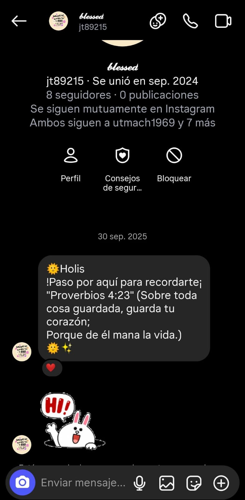

Y no olvidemos como comenzó todo!!!
 <
<
Holaaa ferrr, esta página web la llevo haciendo desde hace una semana y me estresé en algunas ocasiones, pero espero te guste, primero que todo, ¡¡Ya tenemos un año de habernos conocidoo ferrr!! de verdad este año la he pasado no bien, sino súper genial compartiendo historias contigo, aprendiendo más de tiii y tus gustos, las cosas que te gustan hacer y varios aspectos de tu vida, de verdad te agradezco muchisimo por haberme escrito ese 01 de octubre de 2025, haberte conocido fue una de los mejores sucesos que me hayan pasado, y yo no te busqué, por eso siempre pienso que fuiste una bendición enviada hacia mi, porque no tengo otra explicación de poder haber conocido a una persona tan hermosa como tú, de verda muchasssss graciasss ferrr, eres una chica preciosa, no solo físicamente, sino en tu alma, corazón y personalidad eres una chica tan bonita en su manera de ser, en su forma de ayudarme y apoyarme siempre, y he llorado varias veces de la emoción porque no sé que fue que hice para conocer a alguien como tú, y estoy eternamente agradecido, porque sé que no llegaste en vano, llegaste con un propósito, nosé como más agradecerte las veces que me has ayudado, apoyado, consolado, aprecio la bonita forma en la que me tratas de acercar más a nuestro Señor, estás haciendo un acto demasiado bonito por miii, para que no me pierda en este mundo y poder tener una relación con Dios porque todos necesitamos de él en cualquier aspecto, y de verdad he llorado incluso, porque nosé, no me cabe la idea de como una persona puede llegarme a querer tanto, pero luego veo que estás tú y de verdad te aprecio demasiado ferrr, me has hecho subir el autoestima varias veces cuando solo veía las cosas malas de mi, me has apoyado en varios aspectos, me has consolado cuando he estado triste y frustrado o estresado y a la misma vez me has motivado y alegrado esos días donde solo quería pasar tirado en mi cama y en mi cuarto y solo desaparecer, entre varios aspectos más que si los digo todos la página web se me haría muy extensa jsjsjsjs, pero que sepas, que estoy eternamente agradecido por todo lo que has hecho por mi ferrr, de verdad, nosé como más agradecerte, te quisiera abrazar bien fuerte y decirte "graciass de vrd" porque te quiero muchisimooo, en un año me has hecho ver que el tiempo es diferente, porque te conozco de un año y te tengo muchisima confianza porque siempre me cuentas todo sinceramente, y yo también, y es algo raro, porque yo no soy una persona tan abierta con sus pensamientos, pero contigo es todo diferentes, y de verdadd te he agarrado bastante cariño y te aprecio muchisimo fergie, de verdad muchas gracias por venir a mi vida enana blanquita bonita🤗😊
Y no olvidemos como comenzó todo!!!
<
Espero que esta página web te guste mucho, la hice con demasiado cariño para ti, la llevo hacieno creo desde hace una semana, fueron algunos días de estrés, pero espero te guste muchooop, también te quería recordar que eres una gran chica, una hermosa persona, con una linda y noble personalidad, una cosa que admiro de ti es que aunque hayas pasado bastantes cosas en tu pasado y las sigues pasando en tu presente ya sean problemas o algún tema, nunca te das por vencida y siempre encuentras esperanza en tiempos de tempestad, y no solo eso admiro de ti, admiro también como sigues adelante en toda situación, admiro tu fortaleza, tu sensibilidad, tu paciencia y tu calma, admiro bastantes cosas de ti y de verdad pienso y sé que eres única como persona, talvez las personas te hayan pagado mal o fueron injustas o malas contigo, pero eso no te ha evitado de ser alguien noble y con buenos sentimientos, eso te representa como una hermosa persona. También, te quiero pedir perdón por todas las veces que he te fallado, en situaciones como que me ha pasado de la raya con las palabras, qe a veces cuando me has necesitado no he ido, como cuando fuiste banderín, no fui a tomarme fotos contigo, cuando no te solía ir a buscar en el recreo y esperara que vinieras tú, sé que era muy princeso de mi parte, y jessica me lo recalcaba, pero ahora me arrepiento, porque ya no paso recreos contigo😓😔 también te pido perdón por las veces que no te he creido o he desconfiado de ti, como lo que pasó recientemente, aun me cuesta confiar al 100% en todas las personas, pero tú me has demostrado lo contrario, que en ti si puedo confiar, porque me dijiste algo que nadie más me dijo, que el único en el que puedo confiar al 100 es en Dios, y con tus acciones, conversaciones y detalles te has ido ganando mi confianza para contarte cosas que a nadie más le he contado, pero aun hay veces que sigo siendo tímido y como que evito las conversaciones o ando viendo otros temas como proyectos, como lo que pasó en la cena de mi cumple, y de verdad pido perdón por eso, es que nunca nadie se ha interesado demasiado en mi vida ni se ha expresado de forma tan bonita hacia mi y me dan aún nervios, porque me has demostrado que de verdad te intereso, trataré de mejorar en ese aspecto y varios más poco a poco, trato de regular mis palabras, como esa vez que te dije la palabra "cavernícola" lo dije de chiste pero lo tomaste de otra manera, y de verdad ese día hasta lloré, porque cuando hago sentir mal a las personas que quiero, a mi me duele bien feo eso😭😢, también las veces que te he apurado como esa vez esperando a Alex en la piazza, de verdad disculpame por eso, no tenía que apurarte porque igual Alex terminó llegando tarde, pero eso creo que debo sanar porque Alex siempre ha sido que llega y si no sales a tiempo te puede dejar o se enoja bien feo, y no quería que eso pasara, pero igual la terminé cagando como siempre, y de verdad perdóname por eso😓. Eres una gran chica y no me gusta verte sufrir, y peor si es por mi culpa, y me duele ver que siempre cago las cosas y tengo que pedirte perdón, tú incluso creo que has de estar cansada de tanto perdón y perdón, pero de verdad lo siento x todas las veces que me he comportado como un tonto, tú sabes perfectamente que te quiero demasiado, pero aún debo ir corrigiendo algunas cosas, pero te agradezco infinitamente la paciencia que tienes por mi, tu sabiduría y tu interés por mi, así como tratas de cuidar mi corazón, yo también mejoraré para cuidar el tuyo. Para terminar, espero que de verdad te guste mucho la página web, sé que no es mucho pero de verdad si espero que te guste un poquito por lo menos😢 y sobretodo te agradezco demasiado por hablarme siempre de Dios, entiendo que me quieres guiar por el buen camino y no quieres que caiga en este mundo, eso es el acto más bonito que alguien ha hehco por mi en mi vida, y eso demuestra porque te tengo tanta confianza mi blanquita bonita frozen jsjsjs, de verdad ferrr, te agradezco por lo demasiado que me has brindado y perdón por tan pocas cosas que te he brindado😔 espero seguir más tiempo compartiendo amistad contigo y seguir aprendiendo más de ti y contigo, tarde o temprano iré a tu iglesia, tus esperanzas aun no se pierden pero no serán en vano, tarde o temprano iré, sin más que decir ferrr, feliz 1er año de amistad mi enana blanquita bonita, te quiero demasiado copito de nieve hermosaaa😘🤩🤗🤭